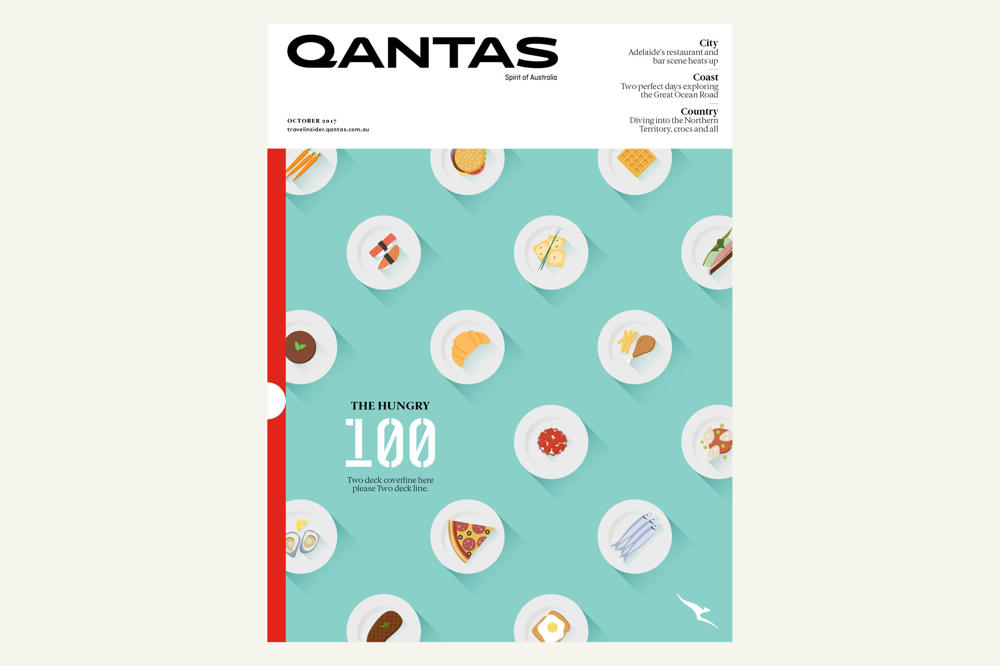
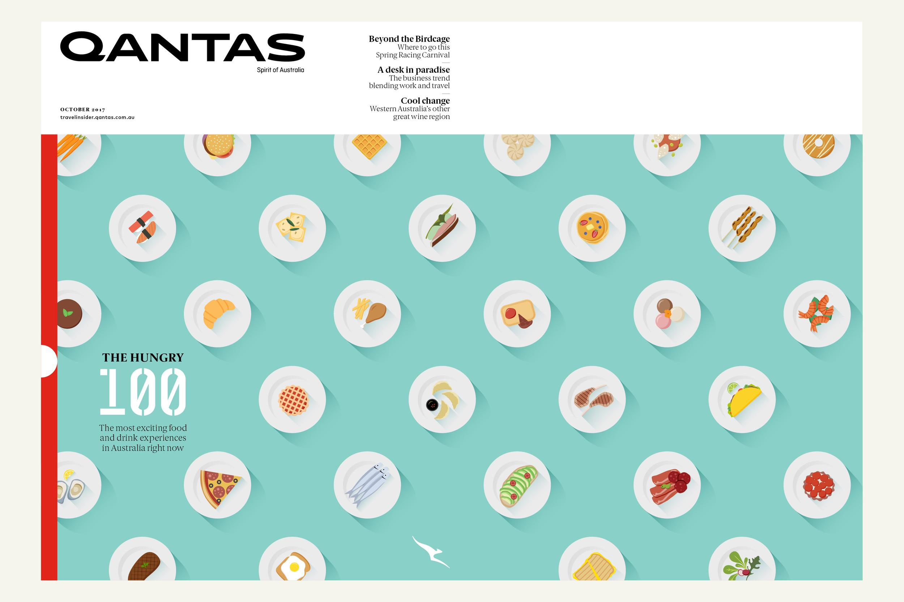

Hungry 100 illustration
Qantas magazine
For the special food edition of Qantas magazine (The Hungry 100) I was tasked with creating conceptual options and the final artwork of the first ever illustrated Qantas cover. From multiple options the client chose the ‘polka dot’ pattern plates, each with a different illustrated meal. This was printed as a gatefold cover, with a spot varnish on every dish.
